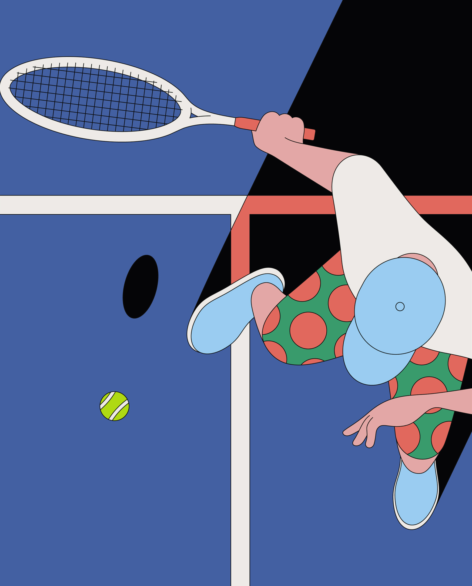
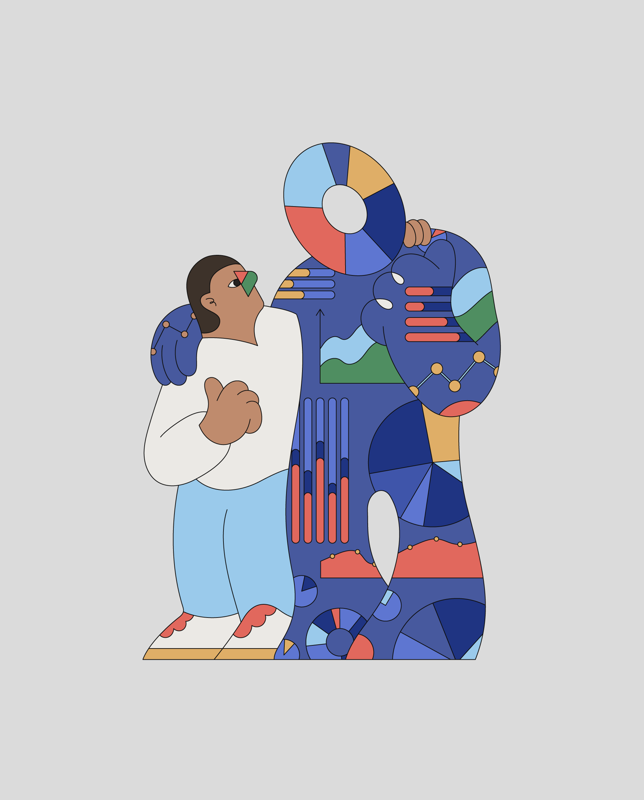
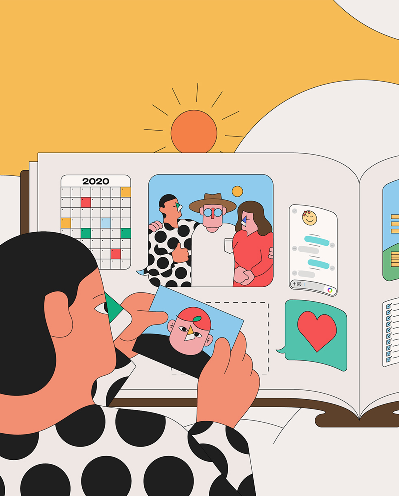
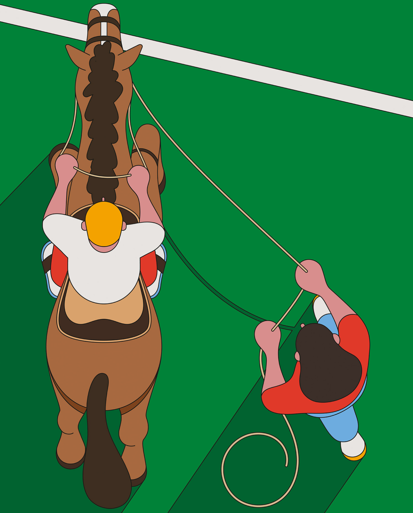

Camilo Huinca
Camilo Huinca's work is rich with colour, and a brightly illustrated narrative that speaks
for itself.
and raised in Santiago in Chile, Camilo has divided his career between graphic
design and painting.
having a main focus on the use of curiosity,” he explains.
In 2014 Camilo set up Perfe Studio where he concentrates on graphic design projects in “a more
commercial way”.
“to be able to generate a communication method based on simplicity and
synthesis, with few tools and colours.”



